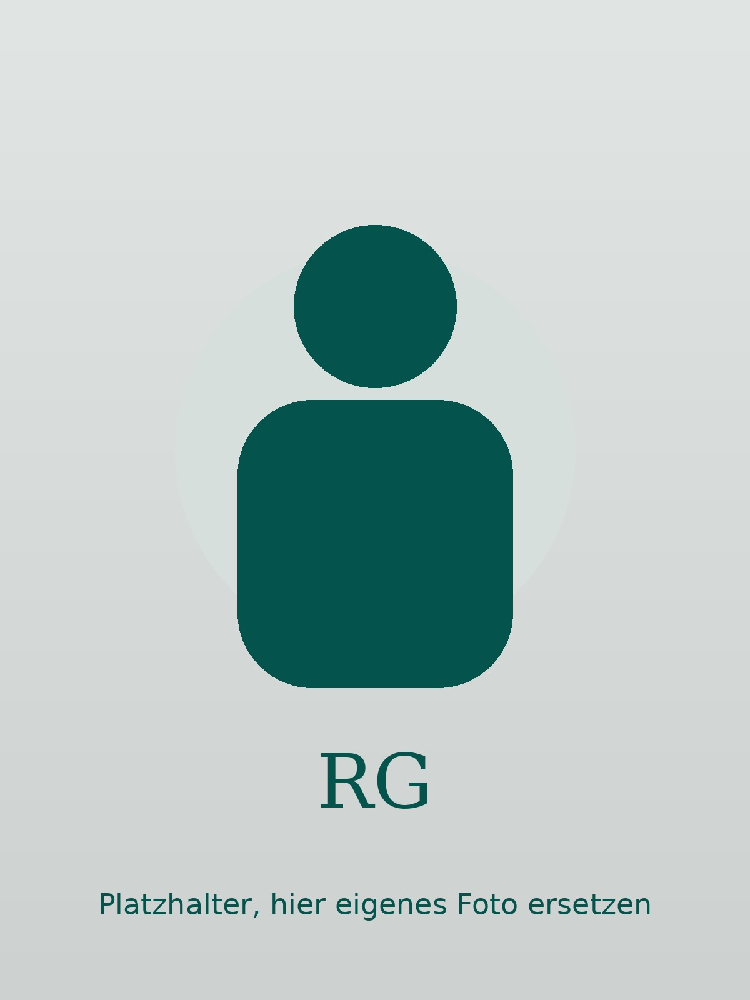

Roswitha Gutbier
Ich unterstütze Organisationen, Teams und Einzelpersonen dabei, Strukturen zu schaffen, Themen zu vermitteln und digitale Werkzeuge wirklich zu nutzen. Klar, direkt, mit Erfahrung.
Kontakt aufnehmen
Erfahrung in Organisation und Gesprächsarbeit — kombiniert mit einem täglichen, praktischen Umgang mit KI. Das ist keine Kombination, die man in drei Monaten erwirbt.
Über zwanzig Jahre in Büro, Projektarbeit, Veranstaltungsorganisation, Seelsorge und Kursleitung. Heute mit einem klaren Fokus auf digitale Themen und die verständliche Vermittlung von KI-Werkzeugen. Was mich auszeichnet: Ich halte den Überblick, auch wenn viel gleichzeitig läuft — und ich mache Themen zugänglich, ohne sie zu verwässern.
Über mich
Ich komme aus der Verwaltungs- und Projektarbeit, war lange in der sozialen Begleitung und Kursleitung tätig und nutze KI-Werkzeuge heute täglich — nicht als Experiment, sondern als normalen Teil der Arbeit.
Was Sie davon haben: Ich bringe strukturelle Kompetenz und echte Menschennähe zusammen. Ich kann Ablauforganisation aufsetzen und gleichzeitig eine Gruppe durch ein schwieriges Thema führen. Beides gehört für mich zusammen.
Mein Anspruch ist Klarheit. Keine Überversprechen, keine Floskeln. Wenn ich etwas nicht weiß oder nicht kann, sage ich das.
Leistungen
Abläufe strukturieren, Zuständigkeiten klären, Kommunikation steuern. Ich übernehme organisatorische Verantwortung — in laufenden Projekten, bei Veranstaltungen oder in der Büroorganisation.
Was das für Sie bedeutet: Verlässliche Strukturen, ohne dass Sie jeden Schritt selbst im Blick haben müssen.
Ich konzipiere und leite Workshops, in denen Themen wirklich ankommen — kein Frontalvortrag, sondern klare Struktur, echte Beteiligung, direkter Transfer.
Themen: KI im Alltag, strukturiertes Arbeiten, Gesprächsführung, Entspannungsverfahren — und auf Anfrage maßgeschneidert.
Ich begleite Menschen in Gesprächsprozessen — wertschätzend, direkt, ohne Bewertung. Einsetzbar in Teams, im Ehrenamt, in sozialen Einrichtungen und überall dort, wo schwierige Gespräche geführt werden müssen.
Was das für Sie bedeutet: Jemand, der zuhört, einordnet und begleitet — ohne das Ziel aus den Augen zu verlieren.
Ich mache KI-Werkzeuge für Menschen nutzbar, die sich nicht als technikaffin verstehen. Praxisnah, ohne Fachjargon, mit ehrlicher Einschätzung dessen, was KI kann — und was nicht.
Was das für Sie bedeutet: Keine Überforderung, keine leeren Versprechen. Konkrete Schritte, die im Arbeitsalltag funktionieren.
KI in der Praxis
KI ist für mich kein Trend und keine Zukunftsvision. Ich nutze KI-Werkzeuge täglich — für Texte, Strukturierung, Recherche, Workshopvorbereitung. Das bedeutet: Ich kenne den Unterschied zwischen dem, was versprochen wird, und dem, was tatsächlich funktioniert.
Warum das für Sie relevant ist: Wenn ich über KI spreche oder berate, tue ich das auf Basis eigener, täglicher Nutzung — nicht auf Basis von Präsentationen. Das macht den Unterschied.
Ich biete Einführungen, Workshops und Begleitung für Einzelpersonen, Teams und Organisationen an — ohne Vorwissen, ohne Technikaffinität vorauszusetzen.
Was ich anbiete
Einführungsworkshops ohne Vorwissen
Begleitung bei der Alltagsintegration
Ehrliche Einordnung: Was bringt KI wirklich?
Individuelle Beratung auf Anfrage
„KI macht keine Arbeit überflüssig. Aber sie macht manche Arbeit leichter — wenn man weiß, wie."
Beruflicher Hintergrund
Langjährige Tätigkeit in Büro und Verwaltung. Zuständig für Abläufe, Kommunikation, Koordination. In kleinen Strukturen wie in größeren Organisationen. Diese Basis zieht sich durch alles andere.
Planung und Durchführung von Veranstaltungen und Promotionprojekten. Direktkontakt mit Menschen, operative Verantwortung, Schnittstellenarbeit. Erfahrung darin, Ideen zuverlässig in Praxis zu übersetzen.
Ausbildung und Praxis in der Seelsorge. Begleitung von Menschen in herausfordernden Lebenssituationen. Die Haltung, die ich dort entwickelt habe — zuhören, nicht bewerten, aushalten — trägt bis heute in allen anderen Bereichen.
Ausgebildete Kursleitung im Bereich Entspannungsverfahren. Kurse für unterschiedliche Zielgruppen — auch für Menschen, die einem solchen Angebot zunächst skeptisch gegenüberstanden.
Aktueller Schwerpunkt: praktischer Umgang mit KI im Arbeitsalltag. Intensive Eigennutzung als Basis, Weitergabe ohne Fachjargon als Ziel — für Menschen, die KI nicht als Technologiethema, sondern als Arbeitsmittel verstehen wollen.
Kontakt
Ob konkrete Anfrage, ein Projekt, das Sie beschäftigt, oder einfach eine erste Einschätzung — schreiben Sie mir. Ich antworte in der Regel am selben oder nächsten Werktag.
Keine langen Vorformulierungen nötig. Ein paar Sätze reichen.
Kontaktformular folgt bei Bedarf. Schreiben Sie mir gern direkt per E-Mail.